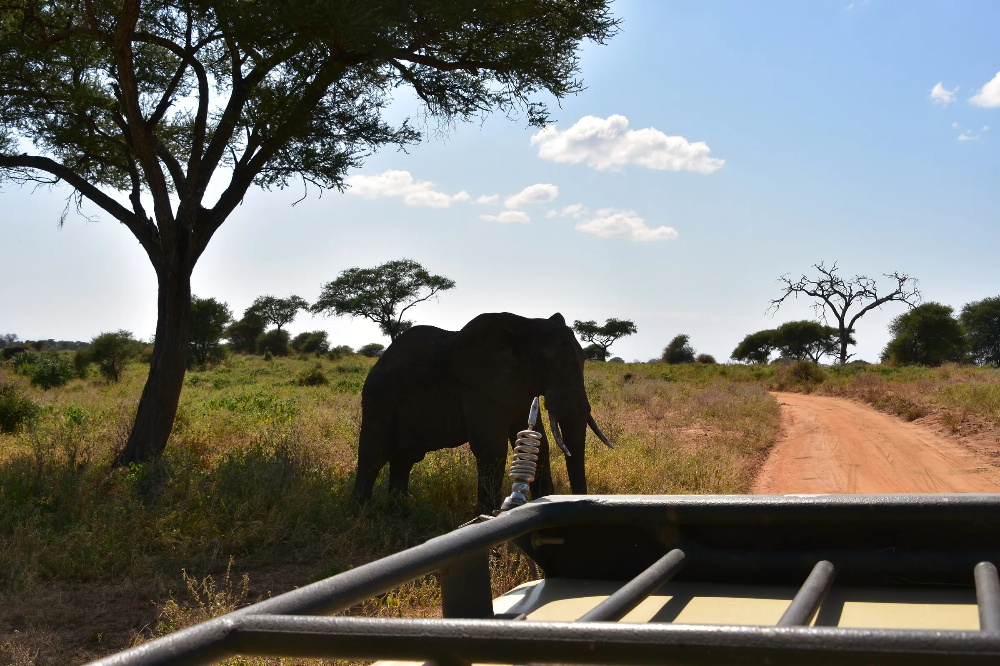
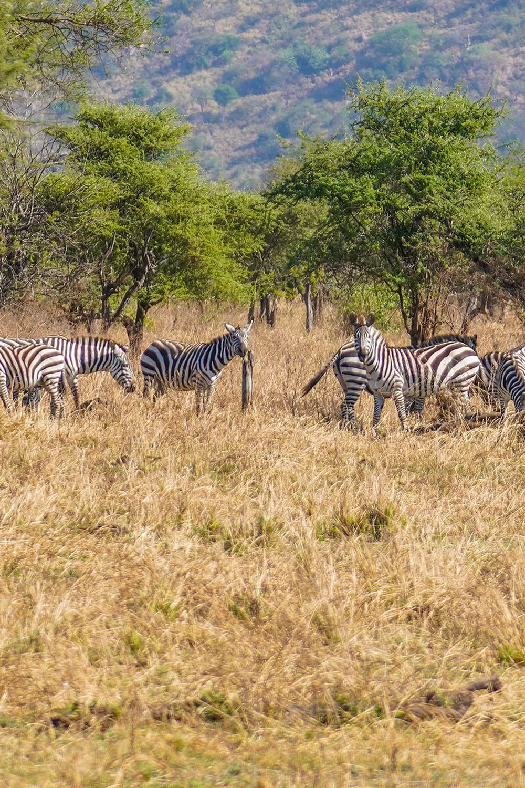
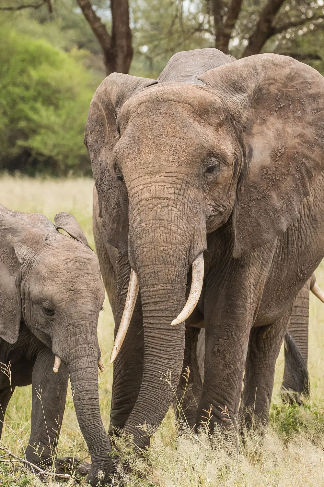
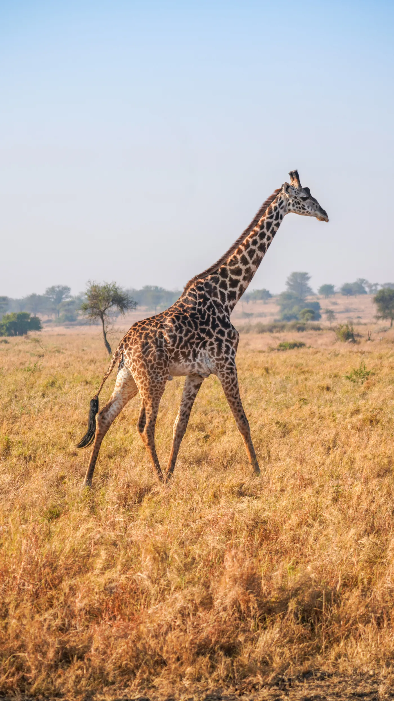
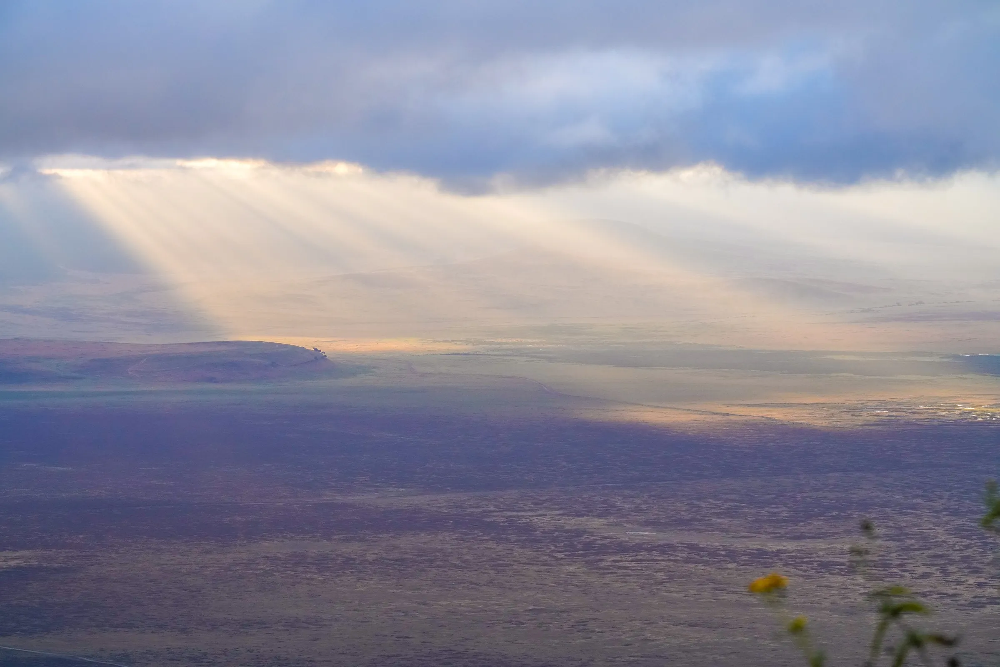
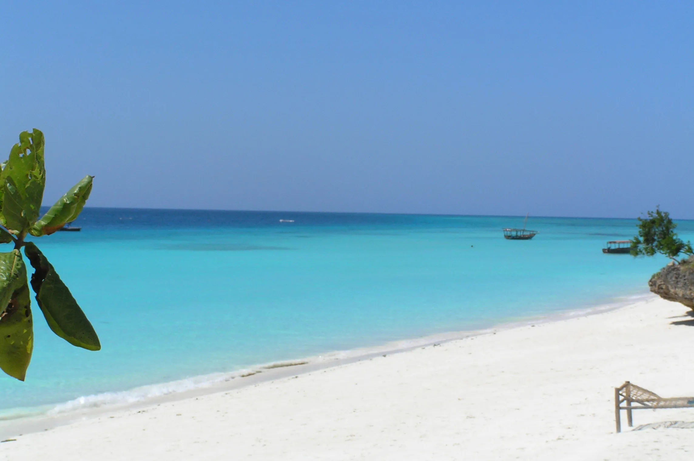
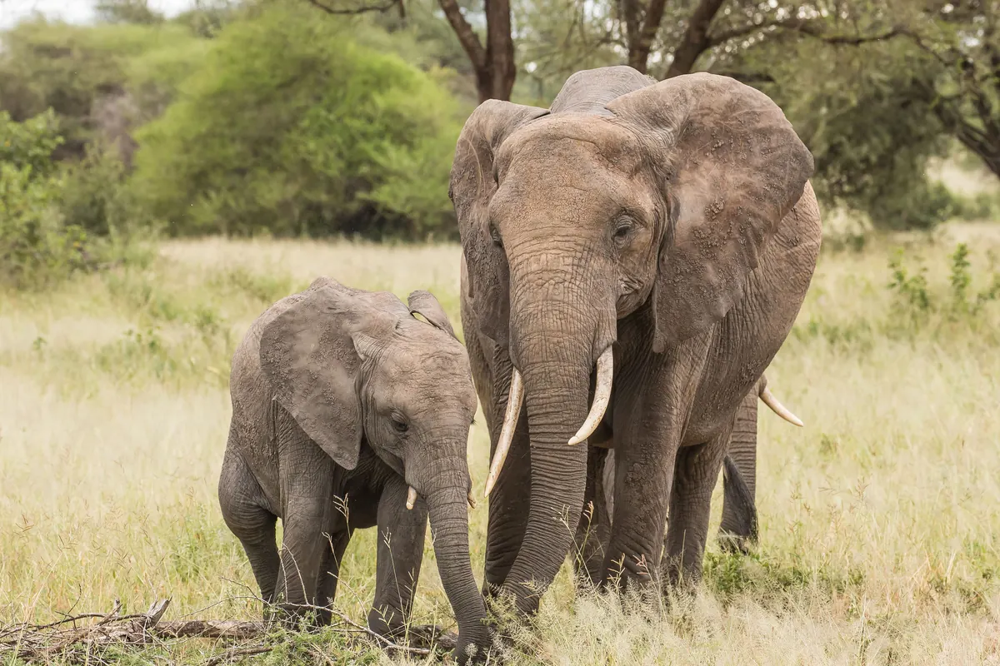
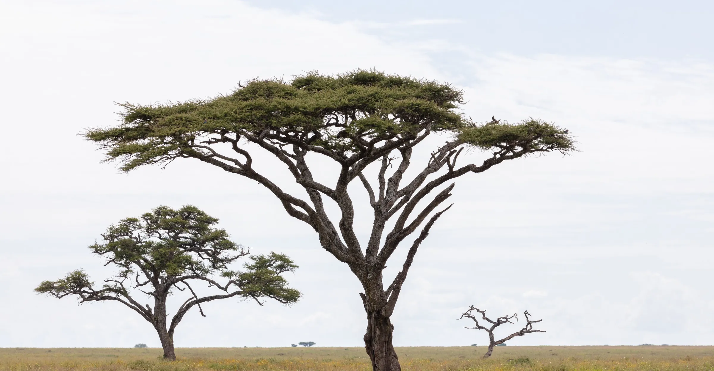

الهجرة الكبرى
تتحرّك قطعان النو بحثًا عن الماء والمرعى. نختار موقع المخيّم بحسب الموسم وأماكن وجود القطعان، ونخصّص يومًا لفوّهة نغورونغورو. قد يصادفك عبورٌ للنهر إذا اجتمع الوقت والمكان.

مع أول الضوء، تمتدّ ظلال الشجر على سهول السيرينغيتي. هناك تبدأ رحلتك مع سمر، ويمكنك أن تختمها على ساحل زنجبار.
في آخر الطريق، قد ترى السهول من نافذة طائرة صغيرة.
عند المهبط يلقاك مرشدك. ومن هناك تبدأ أولى جولاتك بسيارة خاصة.
أول الطريق في تنزانيا
رافقنا إلى السهولتنبت شجرة السَّمُر في السعودية وتنزانيا. منها أخذنا اسمنا. وفي الاسم أيضًا السَّمَر، حديث المساء بعد العودة إلى المخيّم، حين يجد كلٌّ منكم ما يرويه عن يومه. نحن سمر، شركة سعودية ترتّب رحلات سفاري خاصة في تنزانيا للعائلات والأزواج والأصدقاء.

من نافذة الطائرة الصغيرة ترى الطرق الترابية تضيق حتى تصير خطوطًا، وقد تلمح قطيعًا قبل أن تميّز المهبط. تختصر الرحلات الداخلية بعض المسافات الطويلة. وحين تهبط في السهول، يلقاك مرشدك وتكمل معه الطريق برًّا.

يخفّف المرشد السرعة عند بقعة ظلّ. قد يظهر فيها طرف أذن أو ذيل يتحرّك. وبعد لحظة قد تميّز أسدًا مستلقيًا حيث حسبتَ المكان خاليًا. من مسافة آمنة، يريك المرشد ما لفت نظره.

مع سيارة ومرشد لرفقتك، يمكنك أن تمكث عند مشهد استوقفك أو تعود إلى المخيّم حين يتعب الصغار. وإذا عبر قطيعٌ الطريق، تترك له المسافة التي يحدّدها المرشد. وإن سألك الصغار عن الآثار التي تركها، فمعكم من يقرؤها.

في موسم الجفاف، يقصد كثير من الحيوانات نهر تارانغيري. وبين أشجار الباوباب قد ترى قطيع أفيال يمضي نحو الماء وصغاره في الوسط. تتوقّف السيارة بعيدًا، ويبقى الطريق للقطيع.
تختلف المشاهدات بحسب الموسم والمكان. يقرأ مرشدك الآثار وحركة القطيع، ويشرح لك ما تراه من مسافة تتيح للحيوانات أن تمضي في يومها.




تعود من الجولة وفي حذائك شيء من تراب الطريق. بعد العشاء، تجتمعون على شرفة الخيمة. يستعيد أحدكم ما رآه في الصباح، ويضيف آخر تفصيلًا فات البقيّة. نختار مخيّمات صغيرة، ونرتّب الإقامة بما يلائم عددكم وخصوصيتكم.
ترتّب الرحلة لمن تحب، ولكلٍّ منهم ما يجعل يومه أريح. نرتّب الطعام الحلال، ونراعي أوقات الصلاة، وننسّق معك طول الجولات والتنقّل والإقامة قبل السفر.
| مسار الوصول | ننسّق الوصول من السعودية والتنقّل داخل تنزانيا بحسب مسارك. |
|---|---|
| الجولات | سيارة خاصة لرفقتك ومرشد يتحدّث العربية. |
| الإقامة | مخيّمات صغيرة، مع خيارات تناسب العائلات. |
| الطعام | ننسّق الوجبات الحلال واحتياجاتك الغذائية قبل السفر. |
| الصلاة | نراعي أوقات الصلاة عند ترتيب يومك. |
| الموسم | نقترح مناطق الزيارة بحسب موعد سفرك وما ترغب في مشاهدته. |


من الحافّة يبدو قاع الفوّهة سهلًا واحدًا. وحين تنزل إليه تتّضح تفاصيله. قرب الماء طيور، وفي المراعي قد ترى قطعان النو والحُمر الوحشية. نختار مكان الإقامة بحسب مسارك، سواء أردت المبيت قرب الحافّة أو متابعة الطريق إلى السيرينغيتي.

مع أول الضوء، ترى من المنطاد مجرى الماء ينعطف بين الأعشاب، وتظهر الدروب التي يصعب تمييزها من السيارة. يمكننا إضافة الرحلة إلى مسارك بحسب التوفّر والطقس.

بعد صلاة الفجر وكوب قهوة، تلفّ نفسك ببطانية في السيارة. في ضوء الصباح يقرأ المرشد ما تركته الحيوانات من آثار على الطريق. قد تبدأ الجولات باكرًا، ونضبط مواعيدها معك بما يلائم عائلتك.

تبدأ جولتك من باب خشبي منقوش في زقاق ضيّق. حوله بيوت من حجر مرجاني، وعلى مقربة منه سوق تفوح منه رائحة القرنفل. في هذه التفاصيل تقرأ تاريخ مدينة سواحلية نشأت على طرق التجارة في المحيط الهندي، وفي عمارتها أثرٌ من صلاتها بعُمان والهند وأماكن أبعد.

بعد الصباحات الباكرة في البرّ، يطول الفطور على الساحل. تمشي على الشاطئ حين ينحسر المدّ، أو تخرج في قارب شراعي عند الغروب. ويمكن أن تختم رحلتك ببضع ليالٍ في زنجبار، بإقامة تناسب من يسافر معك.
خمسة مسارات تبدأ منها. أخبرنا بما يهمّك، من متابعة الهجرة إلى قضاء وقت أطول على الساحل. نرتّب لك برنامجًا يوضّح الإقامة والتنقّل والأنشطة والسعر بالريال السعودي.
تتحرّك قطعان النو بحثًا عن الماء والمرعى. نختار موقع المخيّم بحسب الموسم وأماكن وجود القطعان، ونخصّص يومًا لفوّهة نغورونغورو. قد يصادفك عبورٌ للنهر إذا اجتمع الوقت والمكان.

تبدأ في تارانغيري بين أشجار الباوباب، ثم تقضي أيامًا في سهول السيرينغيتي. ومن هناك تنتقل إلى زنجبار، حيث يمكنك أن تجمع بين جولة في المدينة الحجرية وأيام على الشاطئ.

تربط الطائرات الصغيرة بين مهابط قريبة من المخيّمات. يناسبك هذا المسار إذا أردت أن تستبدل ببعض ساعات الطريق وقتًا أطول في جولات الصباح والمساء.

يتعرّف الصغار إلى آثار الحيوانات مع المرشد، وبين الجولات وقتٌ للراحة في المخيّم. نختار الإقامة والأنشطة بحسب أعمارهم، ويمكن أن تختم رحلتكم بأيام على البحر.

لرفقة تريد وقتها ومساحتها. نرتّب لك مخيّمًا خاصًا أو طائرة خاصة بحسب المسار، مع خيار الإقامة في فيلا بزنجبار في ختام الرحلة.

ابدأ بموعد سفرك ومن سيشاركك الرحلة. إذا كانت الهجرة الكبرى أول ما تريد رؤيته، فاختر موقع المخيّم بحسب الموسم. وإذا سافرت مع الصغار، فاترك وقتًا للراحة بين الجولات. ولأيامٍ أبطأ قبل العودة، أضف زنجبار إلى مسارك.